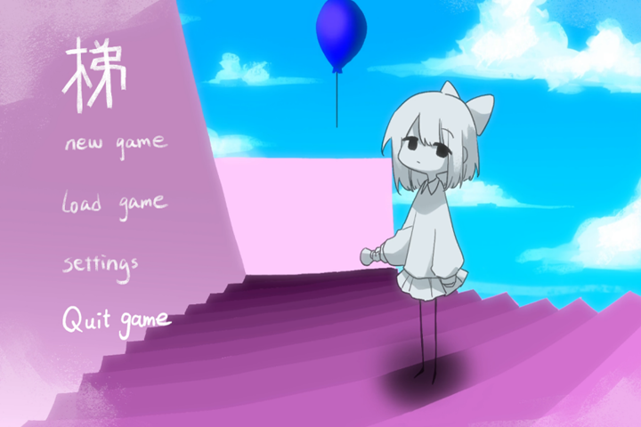
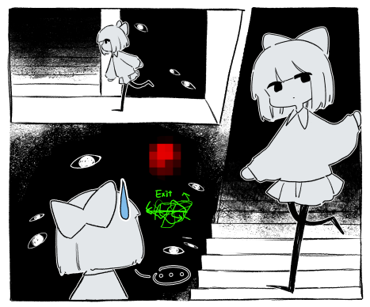
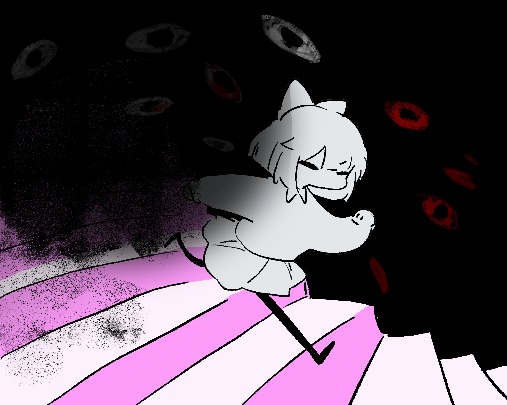

目錄
目錄遊戲介紹


恐怖 單人 2D 解謎
操作平台：電腦
遊戲類型：單人角色扮演
遊戲目的：逃離與突破輪迴、突破第四面牆
遊戲風格：2D點擊解謎


想法來自我某一次做夢，夢到我在爬樓梯，醒來後一直對這個夢印象很深刻。
美術風格採用類似夢核與怪核的處理方式，在明亮柔和的色彩之下穿插黑暗陰森的色調，
講述恐怖詭異的故事，給人一種毛骨悚然的感覺。
遊戲流程會讓玩家在同一層樓不停的輪迴，重複的景象讓人分不清到底是現實還是夢境，
聽著自己一人的腳步聲，有種詭異的孤獨感。
關鍵字：小品遊戲、短篇故事、恐怖、解謎、樓梯、循環、輪迴、夢核、詭異、突破第四面牆、
追逐戰、塗鴉風格、可愛、馬賽克、眼睛、Meta game、黑暗


身為玩家的你發現操作的角色被困在樓梯間，不管往上還是往下都會回到同一層樓，
但是眼尖的你發現樓層之間還是有些許變化，在牆壁的某一處凹陷，
你在鬆動的水泥後面找到了手電筒，在你準備繼續往下探索時，
你聽見遠處傳來低吼聲，感覺四周變得越來越暗，直覺告訴你應該趕快跑。


Unity
場景切換 (特定組合會產生道具或發生劇情)
滑鼠點擊背景可產生對話 存檔 讀檔 (可顯示此存檔持有何種道具)
設定: 音量 解析度 全螢幕模式 角色操縱 持有道具時產生效果 判定結局為何
程式語言：C# 程式模組化：遊戲系統分為獨立模組（道具系統、關卡管理等），降低耦合性。
效能優化：避免使用繁瑣迴圈，優先考慮物件池技術。